SI 221 : ACP et k-moyennes
Contents
- 1 Description des données
- 1.1 Données LANDSAT sur Tarascon
- 1.2 Donn´ees SPOT sur Tarascon
- 1.3 Données LANDSAT sur Kedougou
- 3 Application aux composantes de LANDSAT
- Alors on obtiens le pourcentage d'inertie associé à chaque image.
- 4. Classification automatique : algorithme des K-moyennes
- 5.BONUS : ACP et k-moyennes sur de nouvelles données
- 5.1 Application aux composantes XS de SPOT
- Alors on obtiens le pourcentage d'inertie associé à chaque image.
- 5.2 Application aux composantes de LANDSAT sur Kedougou
- 5.3 k-moyennes sur SPOT et LANDSAT-Kedougou
1 Description des données
1.1 Données LANDSAT sur Tarascon
[tarascons, tara_names] = load_images('LANDSAT/', [512, 512]);
show_images(tarascons, tara_names, [3,3]);
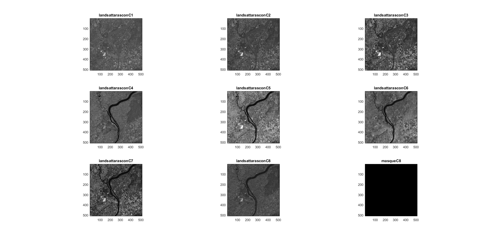 1.2 Donn´ees SPOT sur Tarascon
[spots, spot_names] = load_images('SPOT/', [512, 512]);
show_images(spots, spot_names, [1,3]);
spots_clear = image_clear(spots);
show_images(spots_clear, spot_names, [1,3]);
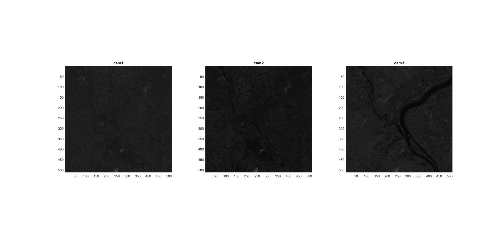 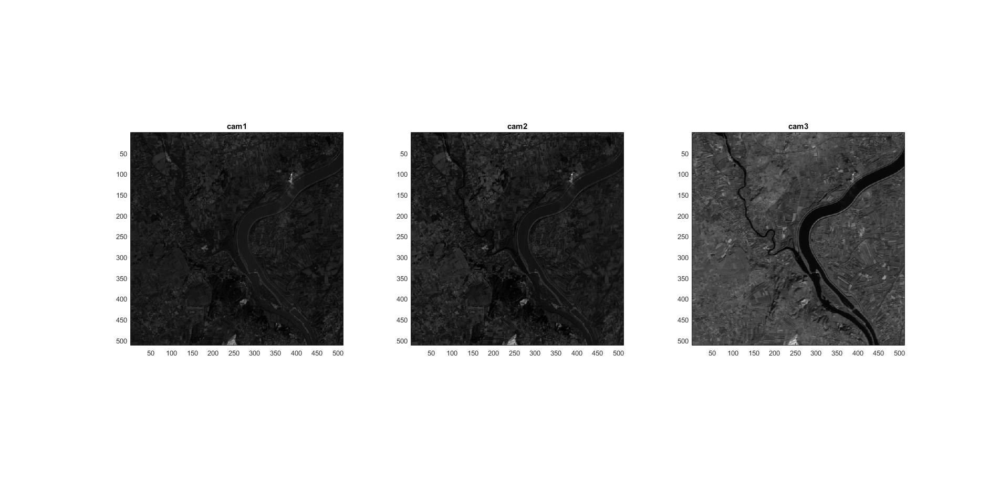 1.3 Données LANDSAT sur Kedougou
[kedougous, kedo_names] = load_images('Landstat_Kedougou/', [256, 256]);
show_images(kedougous, kedo_names, [3,3]);
kedougous_clear = image_clear(kedougous);
show_images(kedougous_clear, kedo_names, [3,3]);
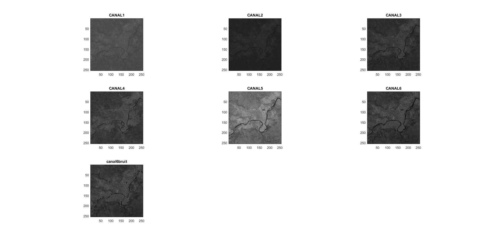 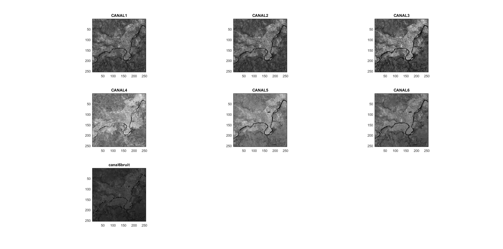 3 Application aux composantes de LANDSAT
nb_feature = 8; nbPix = 512*512; tabimage = reshape(tarascons(:,:, 1:nb_feature), [nbPix, nb_feature]); [T, W, D] = my_PCA(tabimage); post_imgs = reshape(T, 512,512,8);
Alors on obtiens le pourcentage d'inertie associé à chaque image.
lambda = D / sum(D); lambda'
ans =
Columns 1 through 7
0.0013 0.0025 0.0036 0.0168 0.0267 0.0940 0.1698
Column 8
0.6853
On costacte que les pourcentages d'inertie de trois premier canal sont très petite, le rest ont un pourcentage important. Cela bien correspond à notre intuition. En effet, le coleur de la terre et celui de la rivière sur l'image de canal 1 sont très proches , il est difficile de distinguer le frontière.En revanche, on peut trouver le frontière plus facile dans l'image de canal 8. Il est évident que le canal 8 contiens plus d'information.
for i = 1:8 M = post_imgs(:,:,i); I = 255 * (M - min(M(:)))/(max(M(:)) - min(M(:))); subplot(3,3,i) , image(I); title( strcat(['$\lambda_' num2str(i) '=' num2str(lambda(i)) '$']), 'Interpreter', 'latex'); colormap(gray(256)) daspect([1 1 1]); end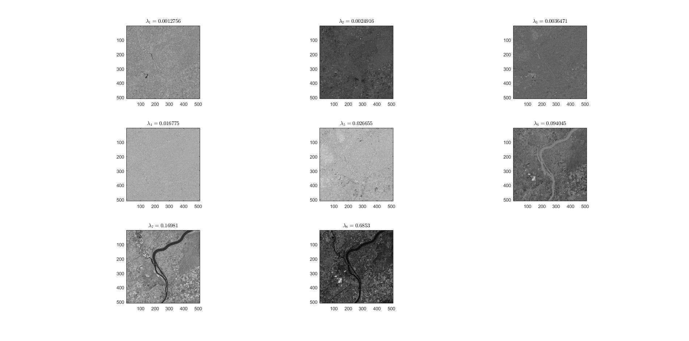
Afin de conserver au mois de 95% de l'information, il suffit de garder 4 images, c'est à dire canal5, canal6 ,canal7 ,canal8 .
cumsum(sort(lambda, 'descend'))'
ans =
Columns 1 through 7
0.6853 0.8551 0.9492 0.9758 0.9926 0.9962 0.9987
Column 8
1.0000
4. Classification automatique : algorithme des K-moyennes
Afin de trouver les prototypes pour chaque canal, on tracer l'histograme.
figure() for i = 1:8 img_tmp = tarascons(:,:,i); subplot(3,3,i),hist(img_tmp(:), 0:1:255); xlim([0,255]); end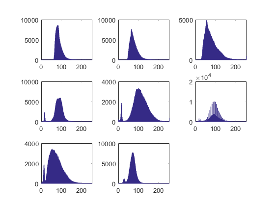
A partir des figures ci-dessous, on choisir les points ci-dessus comme les prototypes initials.
proto1 = [81,95]; proto2 = [66,90]; proto3 = [52,62]; proto4 = [18,90]; proto5 = [16,85]; proto6 = [13,85]; proto7 = [12,30]; proto8 = [28,64]; tabproto = [proto1; proto2; proto3; proto4; proto5; proto6; proto7; proto8]; tabimage = reshape(tarascons(:, :, 1:8), [512*512, 8]); classes = zeros(512*512, 8); for i=1:8 classes(:, i) = kmeans2(tabimage(:,i), tabproto(i,:)'); end Ms = reshape(classes, 512,512,8); Is = image_clear(Ms); show_images(Is, tara_names, [3,3]);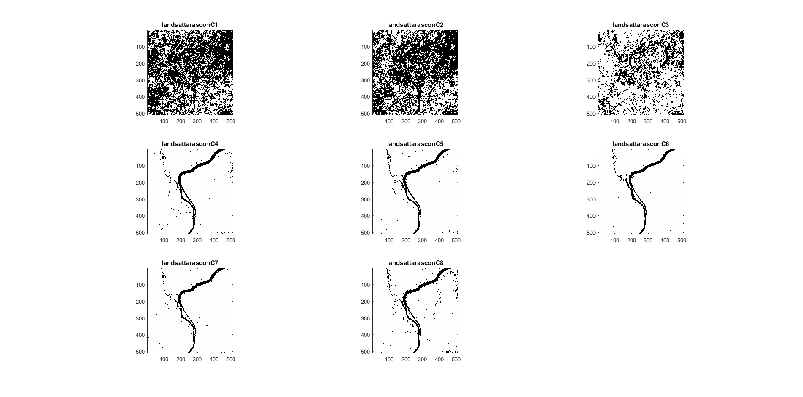
D'après la figure ci-dessus, kmeans n'est pas capable de distinguer la terre et la rivière pour le trois premier.En effet, le coulour de rivière et un partie des pixel sur sol sont proche. Donc des pixels sur sol sont considère comme pixel sur rivière. Cela correspond bien aux resultats dans la partie de PCA.
5.BONUS : ACP et k-moyennes sur de nouvelles données
5.1 Application aux composantes XS de SPOT
nbFeature = 3; nbPix = 512*512; tabimage = reshape(spots, [nbPix, nbFeature]); [T, V, D] = my_PCA(tabimage); post_imgs = reshape(T, 512,512,3);
Alors on obtiens le pourcentage d'inertie associé à chaque image.
lambda = D / sum(D); lambda'
ans =
0.0270 0.2107 0.7623
On costacte que les pourcentages d'inertie de trois canal est important. Il garde plus de détail. Mais il est plus facile de distinguer la frontière entre le rivière et la terre. Donc le deux canal est plus utils.
for i = 1:nbFeature M = post_imgs(:,:,i); I = 255 * (M - min(M(:)))/(max(M(:)) - min(M(:))); subplot(1,3,i) , image(I); title( strcat(['$\lambda_' num2str(i) '=' num2str(lambda(i)) '$']), 'Interpreter', 'latex'); colormap(gray(256)) daspect([1 1 1]); end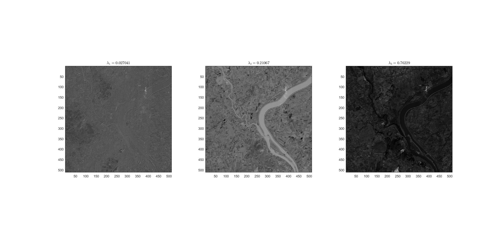
Afin de conserver au mois de 90% de l'information, il suffit de garder 2 images, c'est à dire les deux derniers images .
cumsum(sort(lambda, 'descend'))'
ans =
0.7623 0.9730 1.0000
5.2 Application aux composantes de LANDSAT sur Kedougou
nb_feature = 7; nbPix = 256*256; tabimage = reshape(kedougous, [nbPix, nb_feature]); [T, W, D] = my_PCA(tabimage); post_imgs = reshape(T, 256,256,7);
Alors on obtiens le pourcentage d'inertie associé à chaque image.
lambda = D / sum(D); lambda'
ans =
0.0035 0.0107 0.0118 0.0360 0.0783 0.1086 0.7510
Pour l'image 2,3,4, même leurs valeurs propres sont faible, mais on peut observer bien la contour de rivière. le canal 4 et canal 5 sont sensible pour l'altitude. Donc on ne peut pas décider simplement la importance de chaque feature par valeur propre.
for i = 1:7 M = post_imgs(:,:,i); I = 255 * (M - min(M(:)))/(max(M(:)) - min(M(:))); subplot(3,3,i) , image(I); title( strcat(['$\lambda_' num2str(i) '=' num2str(lambda(i)) '$']), 'Interpreter', 'latex'); colormap(gray(256)) daspect([1 1 1]); end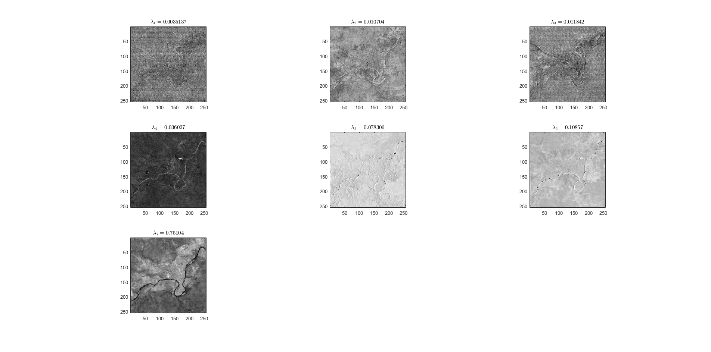
Afin de conserver au mois de 95% de l'information, il suffit de garder 4 images, c'est à dire canal5, canal6 ,canal7 ,canal8 .
sort(lambda, 'descend')' cumsum(sort(lambda, 'descend'))'
ans =
0.7510 0.1086 0.0783 0.0360 0.0118 0.0107 0.0035
ans =
0.7510 0.8596 0.9379 0.9739 0.9858 0.9965 1.0000
5.3 k-moyennes sur SPOT et LANDSAT-Kedougou
Si on utilse tous les canaux sur landsat-kedougou, on obtiens le resultat ci-dessous
figure() for i = 1:6 img_tmp = kedougous(:,:,i); subplot(3,2,i),hist(img_tmp(:), 0:1:255); xlim([0,255]); end dataset = reshape(kedougous(:, :,1:6), [256*256, 6]); index = randsample(1:length(dataset), 5); proto = dataset(index, :); [classe, nb_iter] = my_kmeans(dataset, proto); showClass(classe,[256 256]); figure(); gplotmatrix(dataset, dataset, classe); rates = zeros(1,5); for i = 1:5 rates(1,i) = sum( classe==i ); end rates = rates / size(dataset,1)
rates =
0.1628 0.1733 0.2537 0.0177 0.3925
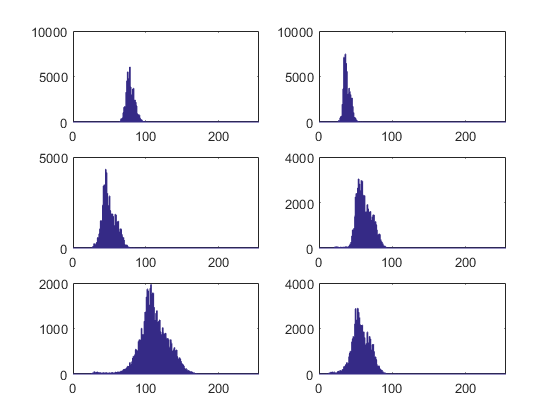 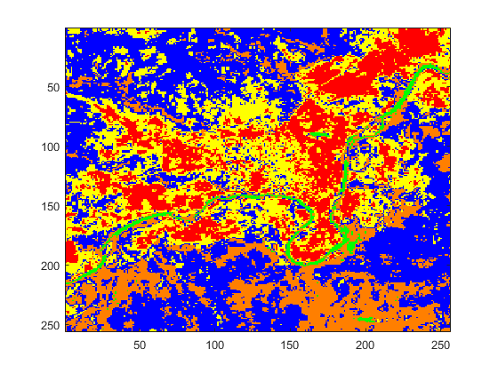 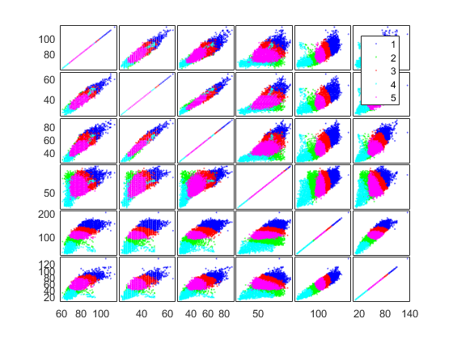